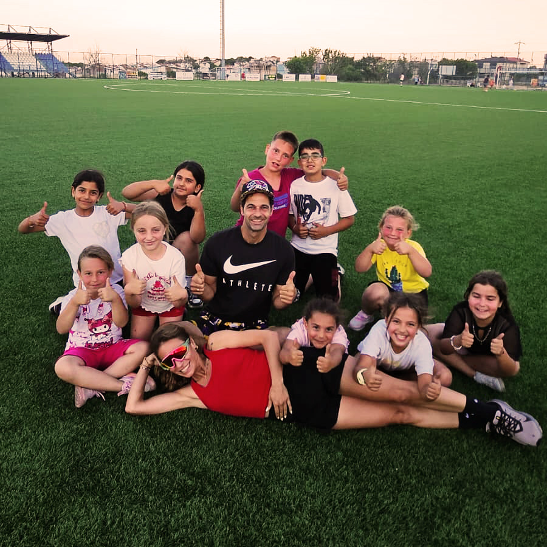
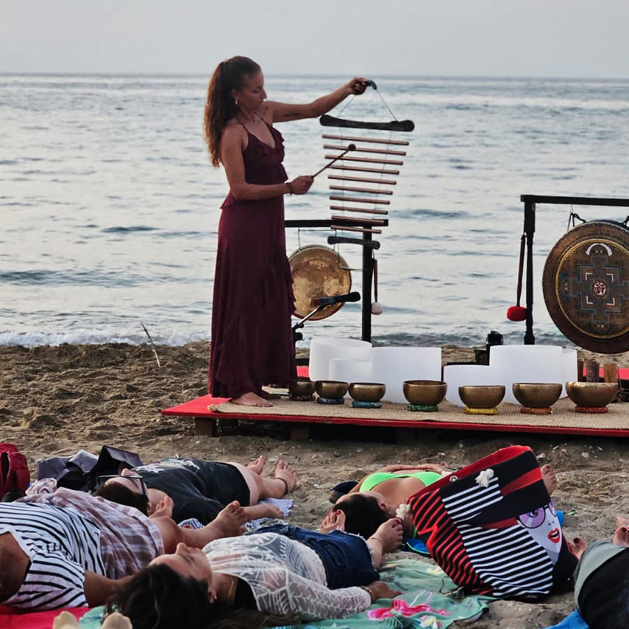
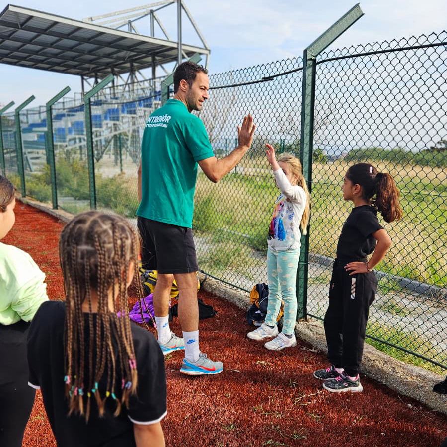
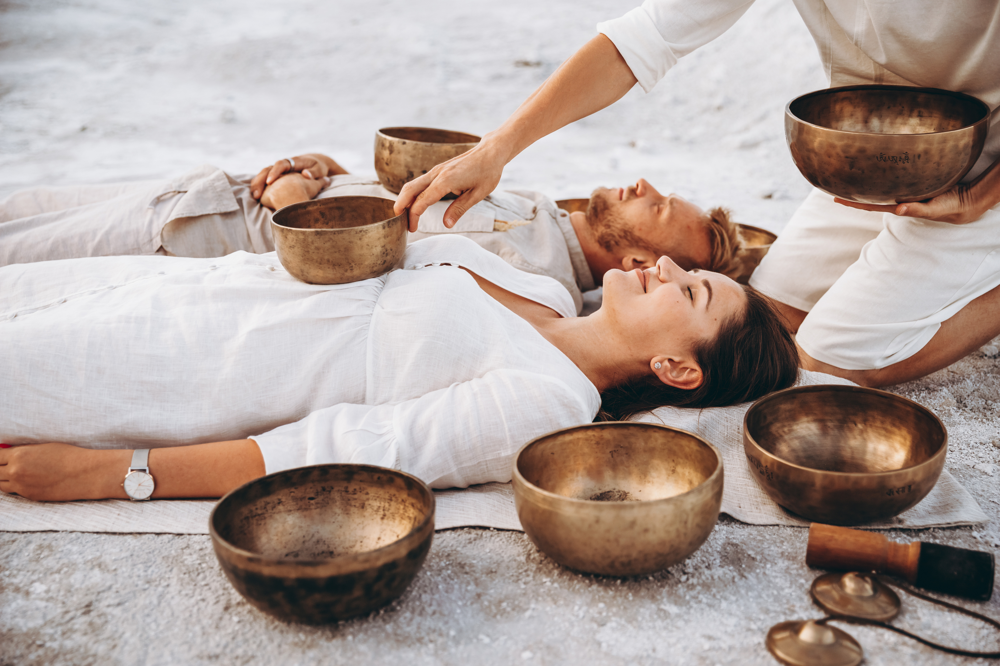
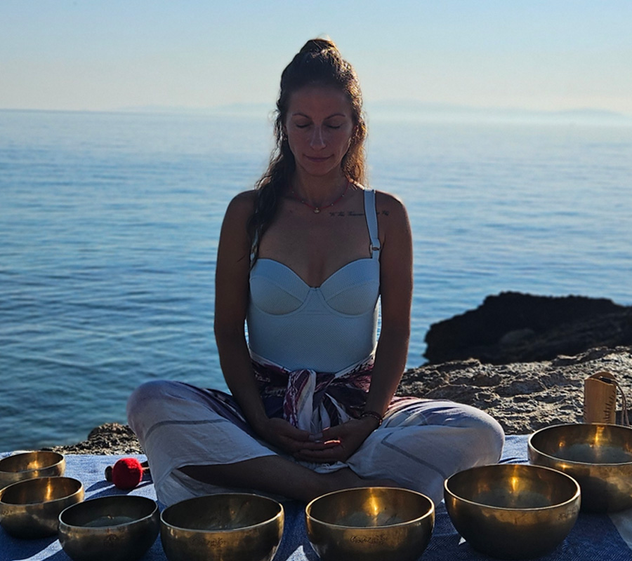
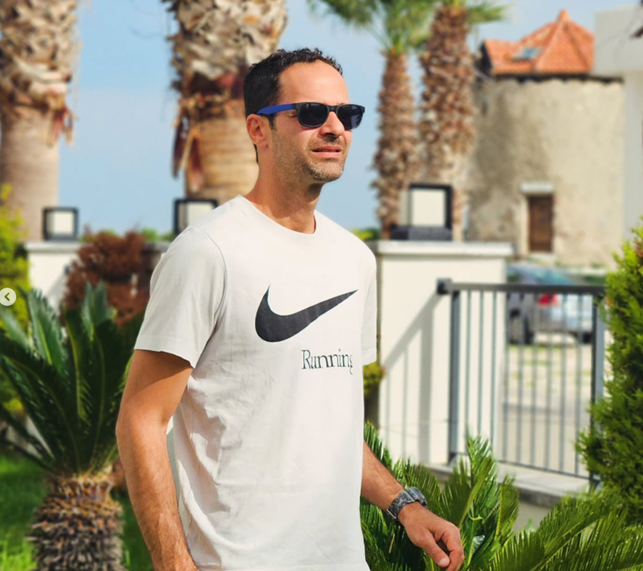

01 / 03
tea country
Nuwara Eliya · EllaMorning mist, train windows and an unhurried view.



Sri Lanka
Indian Ocean
The Topialanka experience
To us, a good journey is less about ticking places off a list and more about noticing what changes when you slow down. We create the space for both.

Journeys to inspire
Scroll slowly. There is no rush here.
01 / 03
Morning mist, train windows and an unhurried view.

02 / 03
Salt in the air and time stretched to the horizon.
03 / 03
The kind of quiet only a wide-open landscape can bring.
“Sometimes getting lost brings you closest to yourself.”
The people behind the journey
Global knowledge, thoughtful planning and a shared love for the island.

01 // CURATOR
Tomris’ journey with sound began at the age of six, through
piano, voice, and the performing arts. Her early years with the
Izmir State Opera and Ballet shaped a deep curiosity for the
connection between sound, frequency, and the human body.
A graduate of 9 Eylül University’s Department of Music, she
later followed this curiosity across India, Indonesia, Nepal,
and the United States, learning from different traditions and
masters along the way.
Today, as an internationally certified sound healing
practitioner, Tomris brings these experiences together to
create moments of connection, presence, and inner balance.

02 // COACH
Kaan believes the best workouts are the ones that challenge you,
energise you, and leave you feeling stronger than when you
started.
With an academic background in sports and a sports school
education, his experience has taken him from Türkiye to Poland
and the USA, working with adults and young athletes in schools
and athletics clubs.
With a focus on functional training, HIIT, and HYROX-style
workouts, Kaan brings knowledge, energy, and a good dose of fun
to every session. His approach is simple: push your limits,
build confidence, and discover just how capable your body can be.
A simple hello is enough